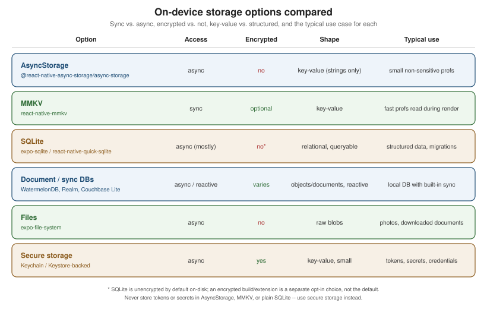

Storage and Offline
|
This content was generated with the assistance of AI and should be verified against the official documentation before being relied on in production. |
Networking and Data Fetching covers talking to
Places's REST backend while the app is online; this page covers what happens to that same data on the
device — which of several on-device storage mechanisms to reach for, how to detect that the network is
actually gone (and actually back), and how to keep the app usable, and its writes safe, while it is. Places's
own answer to all three is built here: an expo-sqlite-backed placesRepository with a pending_writes queue
that survives being offline, and a small MMKV-backed settings store for the preferences that do not need a
queue at all. Secrets and tokens are deliberately out of scope for every mechanism below — see
Security for where those actually belong.
Choosing a Storage Mechanism
React Native ships no single on-device storage API of its own; the right choice depends on how big the data is,
how it needs to be queried, whether it is sensitive, and whether it is a blob rather than structured data at
all. For the native Apple equivalents — SwiftData, UserDefaults, App Group containers and document files — see Persisting Models with SwiftData and
Preferences, Files and Document-Based Apps.
AsyncStorage
@react-native-async-storage/async-storage is an asynchronous key-value store: every read and write returns
a Promise, and every value is a plain string — storing an object means calling JSON.stringify/JSON.parse
yourself.
import AsyncStorage from '@react-native-async-storage/async-storage';
await AsyncStorage.setItem('onboardingComplete', JSON.stringify(true));
const raw = await AsyncStorage.getItem('onboardingComplete');
const onboardingComplete: boolean = raw !== null ? JSON.parse(raw) : false;It is unencrypted on disk and has no query capability beyond "get this key" — fine for small, non-sensitive preferences (an onboarding flag, a last-viewed tab), and explicitly not where a token, password, or any other secret belongs.
MMKV
react-native-mmkv is a synchronous, mmap-backed key-value store: reads and writes return immediately, with
no await and no Promise, which makes it safe to call directly during a component’s render (something
AsyncStorage’s async API cannot offer) as well as from ordinary event handlers. It is dramatically faster than
AsyncStorage for the same key-value shape, and supports an optional encryption key for values that deserve more
protection than plain AsyncStorage but do not need a full secure-storage/Keychain round trip:
import { MMKV } from 'react-native-mmkv';
export const settingsStorage = new MMKV({ id: 'places-settings' });
settingsStorage.set('distanceUnit', 'km');
const distanceUnit = settingsStorage.getString('distanceUnit') ?? 'km';Places's existing useFavouritesStore (src/features/places/store/useFavouritesStore.ts) already uses
Zustand’s persist middleware backed by MMKV for the favourites list; this page adds a separate MMKV-backed
settings store below for app preferences, rather than folding unrelated state into that same store.
SQLite
expo-sqlite (or react-native-quick-sqlite outside of Expo) embeds a real relational database on-device — tables, columns, indexes, joins, and WHERE clauses, not just key lookups. It is the right choice the moment
data is structured and needs to be queried or filtered locally (exactly Places's own list of places, sorted
and filtered offline), and, unlike a key-value store, it has an explicit schema versioning story: a
PRAGMA user_version check (or a dedicated migrations table recording which migrations have already run) at
startup, applying only the migrations a given install has not yet seen.
Document and Sync Databases
A step up from a plain local SQLite database, several embedded databases pair local, queryable storage with a built-in sync protocol to a backend, removing the need to hand-roll one:
-
WatermelonDB — a reactive, lazy-loading local database built specifically for React Native (backed by SQLite under the hood), commonly paired with a custom sync protocol the app implements against its own backend.
-
Realm / Atlas Device SDK — an embedded object database with sync to MongoDB Atlas built in, so writes made offline replicate automatically once connectivity returns.
-
Couchbase Lite — an embedded NoSQL document database with sync to Sync Gateway or Capella App Services built in the same way; see SDKs, connectors & Couchbase Mobile for the server-side half of that sync story.
Places does not adopt any of the three — its own pending_writes queue below is the hand-rolled equivalent
of what these give for free — but any of them is worth considering before building that queue from scratch,
especially once conflict resolution needs to get more sophisticated than last-write-wins.
Files
expo-file-system is for actual file blobs — a photo, a downloaded PDF, a cached image — not for
structured or queryable data. Places stores each place’s photo as a file on disk via expo-file-system and
keeps only its path (photoUri) in the places table below; the photo’s bytes never go through AsyncStorage,
MMKV, or SQLite itself.
Secure Storage
Every mechanism above is either fully unencrypted (AsyncStorage, SQLite by default, files) or only optionally encrypted (MMKV) — none of them is where an auth token, refresh token, or any other secret belongs, in plaintext or otherwise. Security (elsewhere in this section) covers the Keychain/Keystore-backed secure storage APIs that exist specifically for that case.

Detecting Connectivity with NetInfo
@react-native-community/netinfo reports two related but distinct facts about the network, and conflating them
is the most common offline-handling bug:
| Field | Meaning |
|---|---|
|
The device has an active network interface (Wi-Fi or cellular radio associated with something) — |
|
That interface actually reaches the internet, determined by an active reachability probe. It is |
// src/lib/netinfo.ts
import NetInfo from '@react-native-community/netinfo';
export function subscribeToConnectivity(onReachable: (reachable: boolean) => void) {
return NetInfo.addEventListener((state) => {
onReachable(state.isInternetReachable === true);
});
}The useNetInfo() Hook is the component-level equivalent, re-rendering whenever the state changes:
import { useNetInfo } from '@react-native-community/netinfo';
function ConnectivityBanner() {
const { isInternetReachable } = useNetInfo();
if (isInternetReachable === false) {
return <OfflineBanner />;
}
return null; // isInternetReachable === true, or still null while probing
}Treating isConnected as "online enough to sync" is the bug: a phone joined to a hotel Wi-Fi network with no
working internet is isConnected: true and isInternetReachable: false at the same time, and a sync worker
gated only on isConnected will keep trying (and failing) requests it should instead be queuing.
Offline-First Strategies
-
Cache-then-network. Render whatever was cached locally immediately on screen load, kick off a background refetch in parallel, and swap in the fresh response only once it lands — the user sees something instantly instead of a spinner, and never sees stale data linger longer than the refetch takes.
-
A local write queue with retry on reconnect. Every mutation made while offline (or made at all, treating "online" as just a fast-path) is written to a durable local queue first, and a background worker drains that queue against the real API once connectivity is confirmed — exactly what Places's
pending_writestable below implements. -
Timestamps/versions and conflict resolution. Once a queued write can reach the server, the server’s own copy of that record may have changed in the meantime (edited from another device, or by a background sync). Comparing
updatedAttimestamps and letting the newer write win (last-write-wins) is the simplest resolution strategy and is what Places uses below; a more careful merge (field-by-field, or surfacing the conflict to the user to choose) is the alternative once last-write-wins silently discarding a change is not acceptable for the data in question. -
TanStack Query’s offline mutation queue. Networking and Data Fetching covers TanStack Query in full; its
networkMode: 'offlineFirst'option plusonlineManager(and persisted mutations across app restarts) is the higher-level alternative to hand-rolling apending_writestable — worth reaching for first in a project that already uses TanStack Query for its networking layer, with the manual queue below remaining the right choice when the project does not, or when the queue’s exact behavior (ordering, per-row payload shape) needs to be controlled directly.
Storage Limits and OS Eviction
Nothing written to on-device storage should be assumed to survive indefinitely without an explicit backup or sync story:
-
AsyncStorage and SQLite both operate under whatever storage quota the OS enforces for the app as a whole, and a large local cache (photos, a big offline dataset) can push the app toward that ceiling.
-
iOS can purge an app’s on-disk data under low device storage pressure, and an app not opened in a long time is a more aggressive target for that purge than one used daily.
-
Android’s auto-backup can include app data in a user’s cloud backup (restored on a new device) unless the app explicitly excludes paths from it, and a user clearing app data/cache from Android’s own Settings screen wipes local storage outright, with no in-app warning.
A pending_writes row that has not yet synced is exactly the kind of data that must not be lost to either of
these — which is the practical argument for draining the queue as soon as connectivity returns rather than
batching it for later, and for keeping the server the ultimate source of truth rather than the on-device queue.
Places: placesRepository on expo-sqlite
Places stores its Place records (defined in src/features/places/types.ts, declared on
Core Components and React Fundamentals) in
a places table, and every mutation made through the repository is also recorded in a pending_writes table
so the sync worker below can replay it against the real API once the network allows.
Schema
// src/features/places/storage/placesRepository.ts (excerpt: schema)
import * as SQLite from 'expo-sqlite';
const db = SQLite.openDatabaseSync('places.db');
const CURRENT_SCHEMA_VERSION = 1;
function migrate() {
const { user_version: version } = db.getFirstSync<{ user_version: number }>('PRAGMA user_version;')!;
if (version < 1) {
db.execSync(`
CREATE TABLE IF NOT EXISTS places (
id TEXT PRIMARY KEY NOT NULL,
name TEXT NOT NULL,
notes TEXT NOT NULL,
category TEXT NOT NULL,
favourite INTEGER NOT NULL,
visited_at TEXT NOT NULL,
latitude REAL,
longitude REAL,
photo_uri TEXT,
created_at TEXT NOT NULL,
updated_at TEXT NOT NULL
);
CREATE TABLE IF NOT EXISTS pending_writes (
id TEXT PRIMARY KEY NOT NULL,
op TEXT NOT NULL,
payload TEXT NOT NULL,
created_at TEXT NOT NULL
);
`);
}
db.execSync(`PRAGMA user_version = ${CURRENT_SCHEMA_VERSION};`);
}
migrate();PRAGMA user_version is SQLite’s own built-in schema-version counter — no extra table needed just to track it — with each if (version < N) block applying exactly the migration that version introduced, so an install
already at version 1 skips straight past it on every later app update that adds version 2, 3, and so on.
placesRepository
// src/features/places/storage/placesRepository.ts (excerpt: repository)
import type { Place } from '../types';
export type PendingWriteOp = 'create' | 'update' | 'delete';
export interface PendingWrite {
id: string;
op: PendingWriteOp;
payload: string; // JSON-serialized Place (or { id } alone for a delete)
createdAt: string;
}
function rowToPlace(row: any): Place {
return {
id: row.id,
name: row.name,
notes: row.notes,
category: row.category,
favourite: row.favourite === 1,
visitedAt: row.visited_at,
latitude: row.latitude,
longitude: row.longitude,
photoUri: row.photo_uri,
createdAt: row.created_at,
updatedAt: row.updated_at,
};
}
export const placesRepository = {
getAll(): Place[] {
const rows = db.getAllSync<any>('SELECT * FROM places ORDER BY visited_at DESC;');
return rows.map(rowToPlace);
},
upsert(place: Place): void {
db.runSync(
`INSERT INTO places (id, name, notes, category, favourite, visited_at, latitude, longitude, photo_uri, created_at, updated_at)
VALUES ($id, $name, $notes, $category, $favourite, $visitedAt, $latitude, $longitude, $photoUri, $createdAt, $updatedAt)
ON CONFLICT(id) DO UPDATE SET
name = excluded.name, notes = excluded.notes, category = excluded.category,
favourite = excluded.favourite, visited_at = excluded.visited_at,
latitude = excluded.latitude, longitude = excluded.longitude,
photo_uri = excluded.photo_uri, updated_at = excluded.updated_at;`,
{
$id: place.id,
$name: place.name,
$notes: place.notes,
$category: place.category,
$favourite: place.favourite ? 1 : 0,
$visitedAt: place.visitedAt,
$latitude: place.latitude,
$longitude: place.longitude,
$photoUri: place.photoUri,
$createdAt: place.createdAt,
$updatedAt: place.updatedAt,
},
);
},
enqueueWrite(op: PendingWriteOp, payload: unknown): void {
db.runSync('INSERT INTO pending_writes (id, op, payload, created_at) VALUES ($id, $op, $payload, $createdAt);', {
$id: `${Date.now()}-${Math.random().toString(36).slice(2)}`,
$op: op,
$payload: JSON.stringify(payload),
$createdAt: new Date().toISOString(),
});
},
getPendingWrites(): PendingWrite[] {
const rows = db.getAllSync<any>('SELECT * FROM pending_writes ORDER BY created_at ASC;');
return rows.map((row) => ({ id: row.id, op: row.op, payload: row.payload, createdAt: row.created_at }));
},
clearPendingWrite(id: string): void {
db.runSync('DELETE FROM pending_writes WHERE id = $id;', { $id: id });
},
};A Queued addPlace Mutation
Adding a place writes to the local places table and enqueues a pending_writes row in the same call, so
the UI reflects the new place instantly regardless of whether the device is online:
// src/features/places/storage/addPlace.ts
import type { NewPlaceInput, Place } from '../types';
import { placesRepository } from './placesRepository';
export function addPlace(input: NewPlaceInput): Place {
const now = new Date().toISOString();
const place: Place = {
id: `${Date.now()}-${Math.random().toString(36).slice(2)}`,
...input,
favourite: false,
createdAt: now,
updatedAt: now,
};
placesRepository.upsert(place); // optimistic local write, visible immediately
placesRepository.enqueueWrite('create', place);
return place;
}The Sync Worker
A worker subscribed to NetInfo drains pending_writes in order the moment isInternetReachable turns true,
calling the real API for each row and removing it only once that call succeeds — leaving it in the queue, to be
retried on the next reconnect, if the call fails:
// src/features/places/storage/syncWorker.ts
import NetInfo from '@react-native-community/netinfo';
import { placesApi } from '../../../lib/apiClient';
import { placesRepository } from './placesRepository';
import type { Place } from '../types';
let syncing = false;
async function drainPendingWrites(): Promise<void> {
if (syncing) {
return; // a drain is already in flight; the next reachability event will trigger another one
}
syncing = true;
try {
for (const write of placesRepository.getPendingWrites()) {
const payload = JSON.parse(write.payload) as Place;
try {
if (write.op === 'create' || write.op === 'update') {
const serverPlace = await placesApi.addPlace(payload);
resolveConflict(payload, serverPlace);
} else if (write.op === 'delete') {
await placesApi.deletePlace(payload.id);
}
placesRepository.clearPendingWrite(write.id);
} catch {
break; // stop draining on the first failure; retry the same row (and any after it) next time
}
}
} finally {
syncing = false;
}
}
function resolveConflict(local: Place, server: Place): void {
// Last-write-wins: whichever side has the newer updatedAt is kept locally.
const winner = new Date(server.updatedAt) > new Date(local.updatedAt) ? server : local;
placesRepository.upsert(winner);
}
export function startSyncWorker(): void {
NetInfo.addEventListener((state) => {
if (state.isInternetReachable === true) {
void drainPendingWrites();
}
});
}The diagram’s conflict branch is the same resolveConflict last-write-wins comparison shown in the sync worker
above; a case where silently keeping the newer updatedAt is not good enough (e.g. two genuinely different
edits to the same place) is exactly where surfacing the conflict to the user instead of resolving it silently
becomes the right call.
Places: An MMKV-Backed Settings Store
Not every piece of local state needs a queue — a simple app preference like the distance unit shown in units elsewhere in this section, or whether favourites sort to the top of the list, is read constantly (including during render) and never needs to reach the server at all, which is exactly MMKV’s synchronous strength:
// src/features/settings/SettingsScreen.tsx (excerpt: the store)
import { MMKV } from 'react-native-mmkv';
const storage = new MMKV({ id: 'places-settings' });
export type DistanceUnit = 'km' | 'mi';
export const settingsStorage = {
getDistanceUnit(): DistanceUnit {
return (storage.getString('distanceUnit') as DistanceUnit | undefined) ?? 'km';
},
setDistanceUnit(unit: DistanceUnit): void {
storage.set('distanceUnit', unit);
},
getFavouritesFirst(): boolean {
return storage.getBoolean('favouritesFirst') ?? false;
},
setFavouritesFirst(value: boolean): void {
storage.set('favouritesFirst', value);
},
};Reading settingsStorage.getDistanceUnit() directly inside a component’s render is safe precisely because MMKV
is synchronous — there is no useEffect/useState dance needed just to read a value back out, the way there
would be with AsyncStorage’s Promise-based API.